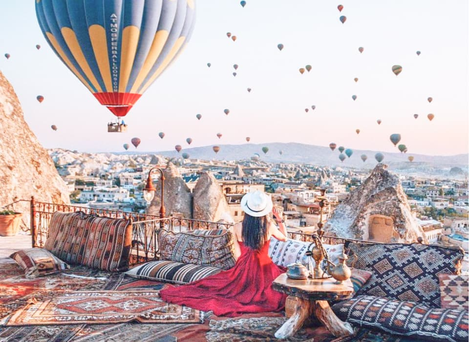
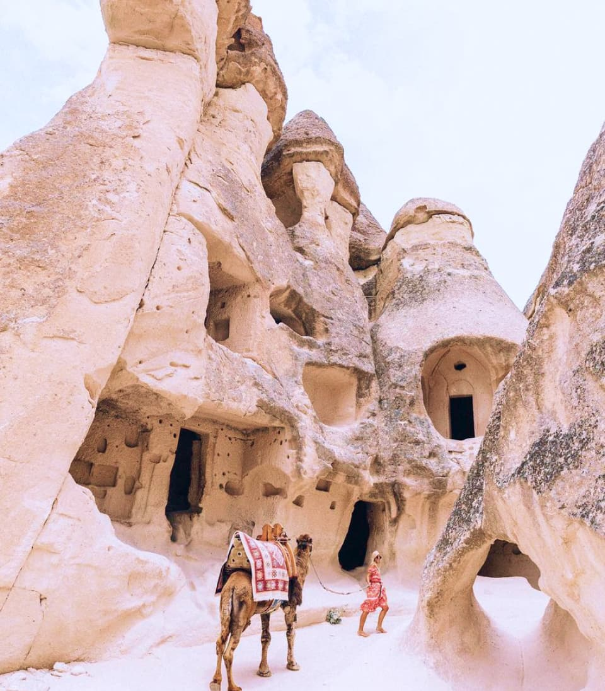
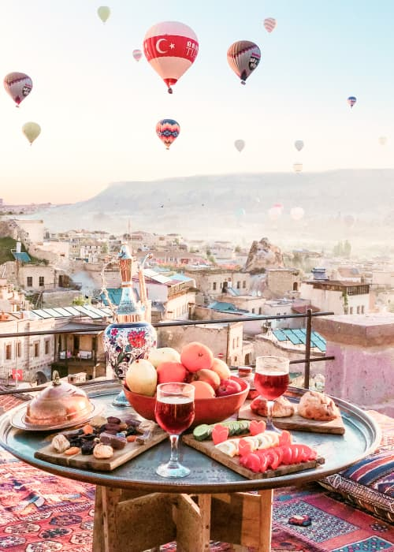
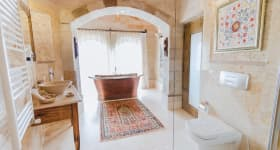
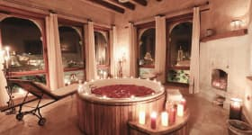
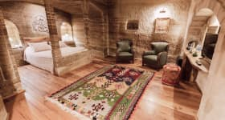
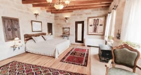

Cappadocia
Эксклюзивный тур
Fairy tail
Сказочная страна чудес
Каппадокия - сказочная страна воздушных шаров, сырных домиков, разноцветных долин и волшебных рассветов! Сюда приезжают, чтобы увидеть природные чудеса, полетать на воздушном шаре и конечно же сделать миллион красивых фотографий!
Участников тура ждёт профессиональная фотосессия от лучших фотографов Каппадокии! Ведь именно за волшебными фото на рассвете на фоне воздушных шаров сюда приезжают люди со всего мира!
Также Вы увидите:
- Музей на открытом воздухе в Гёреме
- Ущелье Ыхлара и монастырь Селиме
- Подземные города
- Крепость Учхисар
- Зельве и Пашабаг
и многие другие достпримечательности.
Местная кухня — один из поводов посетить Каппадокию, здесь есть рестораны на любой бюджет.
Our trip
Маршрут
-
День 1
- Прилёт в Анкару
- Трансфер в Каппадокию
- Солёное озеро
- Приезд в Гёреме
- Ужин
-
День 2
- Фотосессия
- Завтрак в отеле
- Дневной тур по Каппадокии
- Закат с панорамным видом
-
День 3
- Полёт на воздушном шаре
- Завтрак в отеле
- Экскурсии на выбор
-
День 4
- Свободное время, шоппинг
- Трансфер в Анкару
- Вылет в Киев
Hotel
Sultan Cave Suites
В этом уникальном отеле, расположенном на вершине холма Айдынлы, вы можете забронировать высеченные в скале номера, обставленные антикварной мебелью со всей Турции. С солнечной террасы отеля открывается прекрасный панорамный вид на Национальный парк Гереме.
Большинство номеров отеля Sultan Cave Suites высечены в скале, что обеспечивает прохладу и покой. Все номера оборудованы гостиной зоной и современной ванной комнатой. В большинстве из них есть собственная терраса или балкон.
Отель Cave Suites Sultan располагает изысканным рестораном, где подают фирменные блюда региона Каппадокии. После ужина, пройдя на террасу, вы сможете заказать напиток и полюбоваться закатом солнца над деревней.
- 
- 
- 
- 
Price
Стоимость услуг
-
Включено
- Проживание в двухместном номере в отеле с завтраками
- Индивидуальный трансфер для нашей группы из Анкары и обратно
- Экскурсия на Солёное озеро
- Индивидуальная дневная экскурсия по лучшим местам Каппадокии с личным транспортом
- Фотосессия с профессиональным фотографом для каждой участницы (Несколько локаций, 5 лучших фото в обработке фотографа и весь материал (до 100 фотографий)
-
Не включено
- Авиа Киев-Анкара-Киев (140-170$)
- Обеды и ужины (150$ на поездку)
- Воздушный шар 200$
- Дополнительные экскурсии (по желанию) от 30$
-
1.07.2020
Ближайшая дата тура
-
490$
Стоимость